CODING AGENTS AS PIXEL WORLD MODELS
traex/DeepSeek-V4.1-Flash · 0055
点击播放 · 原生 RGB 像素
逐轮保存的候选
回放视频、检查图与代码变化。
每份候选均可单独播放。实际图片检查记录在下方工具轨迹中。
候选 01播放与检查图
点击播放 · 原生 RGB 像素

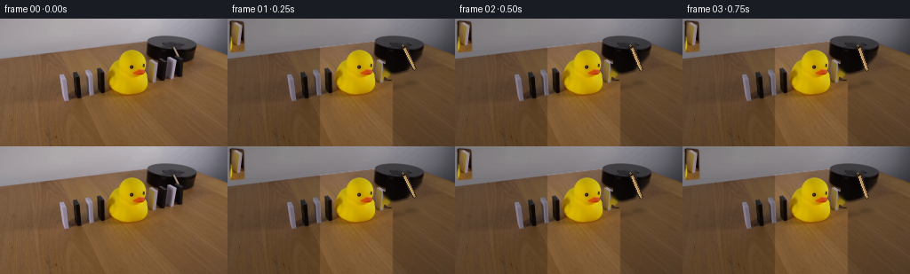
展开代码变化
--- 上一保存版本
+++ 本次保存版本
@@ -0,0 +1,270 @@
+from pathlib import Path
+import math
+
+import cv2
+import numpy as np
+
+from artifact_io import save
+
+
+ROOT = Path(__file__).resolve().parent
+WIDTH, HEIGHT = 256, 144
+N_FRAMES = 20
+FPS = 4
+
+
+def smoothstep(value):
+ value = np.clip(value, 0.0, 1.0)
+ return value * value * (3.0 - 2.0 * value)
+
+
+def fall_curve(frame, start, duration, final_angle):
+ if frame <= start:
+ return 0.0
+ u = min((frame - start) / duration, 1.0)
+ # A fast gravity-driven tip followed by a short deceleration at contact.
+ return final_angle * (1.0 - (1.0 - u) ** 2.35)
+
+
+def alpha_polygon(shape, points, blur=0.55):
+ mask = np.zeros(shape, dtype=np.uint8)
+ cv2.fillPoly(mask, [np.round(points).astype(np.int32)], 255, cv2.LINE_AA)
+ if blur:
+ mask = cv2.GaussianBlur(mask, (3, 3), blur)
+ return mask.astype(np.float32) / 255.0
+
+
+def extract_piece(image, polygon, pad=3):
+ x0 = max(0, int(math.floor(polygon[:, 0].min())) - pad)
+ y0 = max(0, int(math.floor(polygon[:, 1].min())) - pad)
+ x1 = min(WIDTH, int(math.ceil(polygon[:, 0].max())) + pad + 1)
+ y1 = min(HEIGHT, int(math.ceil(polygon[:, 1].max())) + pad + 1)
+ local_polygon = polygon - np.array([x0, y0], dtype=np.float32)
+ alpha = alpha_polygon((y1 - y0, x1 - x0), local_polygon)
+ rgb = image[y0:y1, x0:x1].copy()
+ return {"rgb": rgb, "alpha": alpha, "origin": (x0, y0)}
+
+
+def composite_rgba(canvas, piece, matrix):
+ rgb = piece["rgb"]
+ alpha = piece["alpha"]
+ warped_rgb = cv2.warpAffine(
+ rgb,
+ matrix,
+ (WIDTH, HEIGHT),
+ flags=cv2.INTER_LINEAR,
+ borderMode=cv2.BORDER_CONSTANT,
+ borderValue=(0, 0, 0),
+ )
+ warped_alpha = cv2.warpAffine(
+ alpha,
+ matrix,
+ (WIDTH, HEIGHT),
+ flags=cv2.INTER_LINEAR,
+ borderMode=cv2.BORDER_CONSTANT,
+ borderValue=0,
+ )
+ warped_alpha = np.clip(warped_alpha, 0.0, 1.0)[..., None]
+ canvas[:] = canvas * (1.0 - warped_alpha) + warped_rgb * warped_alpha
+
+
+def add_soft_shadow(canvas, center, axes, angle_deg, opacity=0.23):
+ shadow = np.zeros((HEIGHT, WIDTH), dtype=np.float32)
+ cv2.ellipse(
+ shadow,
+ (int(round(center[0])), int(round(center[1]))),
+ (max(1, int(round(axes[0]))), max(1, int(round(axes[1])))),
+ angle_deg,
+ 0,
+ 360,
+ 1.0,
+ -1,
+ cv2.LINE_AA,
+ )
+ shadow = cv2.GaussianBlur(shadow, (0, 0), 1.8) * opacity
+ canvas[:] = canvas * (1.0 - shadow[..., None])
+
+
+def add_fall_shadow(canvas, pivot, angle_deg, length, width=7.0, opacity=0.15):
+ if angle_deg < 3.0:
+ add_soft_shadow(canvas, (pivot[0] + 1.5, pivot[1] + 1.5), (7.5, 2.2), 0, 0.18)
+ return
+ theta = math.radians(angle_deg)
+ direction = np.array([-math.sin(theta), -math.cos(theta)], dtype=np.float32)
+ p0 = np.array(pivot, dtype=np.float32) + np.array([2.0, 2.2], dtype=np.float32)
+ p1 = p0 + direction * length
+ layer = np.zeros((HEIGHT, WIDTH), dtype=np.uint8)
+ cv2.line(
+ layer,
+ tuple(np.round(p0).astype(int)),
+ tuple(np.round(p1).astype(int)),
+ (255,),
+ int(round(width)),
+ cv2.LINE_AA,
+ )
+ cv2.circle(layer, tuple(np.round(p0).astype(int)), int(round(width * 0.48)), 255, -1, cv2.LINE_AA)
+ shadow = cv2.GaussianBlur(layer.astype(np.float32) / 255.0, (0, 0), 2.2) * opacity
+ canvas[:] = canvas * (1.0 - shadow[..., None])
+
+
+def draw_stick(canvas, pivot, angle_deg):
+ theta = math.radians(angle_deg)
+ length = 28.0
+ tip = (
+ int(round(pivot[0] + math.cos(theta) * length)),
+ int(round(pivot[1] + math.sin(theta) * length)),
+ )
+ origin = (int(round(pivot[0])), int(round(pivot[1])))
+
+ shadow = np.zeros((HEIGHT, WIDTH, 3), dtype=np.float32)
+ cv2.line(shadow, (origin[0] + 1, origin[1] + 2), (tip[0] + 1, tip[1] + 2), (0.0, 0.0, 0.0), 4, cv2.LINE_AA)
+ shadow = cv2.GaussianBlur(shadow, (0, 0), 1.2)
+ canvas[:] = canvas * 0.79 + shadow * 0.21
+
+ cv2.line(canvas, origin, tip, (57, 43, 31), 4, cv2.LINE_AA)
+ cv2.line(canvas, origin, tip, (177, 139, 87), 2, cv2.LINE_AA)
+ offset = (int(round(-math.sin(theta) * 0.7)), int(round(math.cos(theta) * 0.7)))
+ cv2.line(
+ canvas,
+ (origin[0] + offset[0], origin[1] + offset[1]),
+ (tip[0] + offset[0], tip[1] + offset[1]),
+ (216, 181, 119),
+ 1,
+ cv2.LINE_AA,
+ )
+ cv2.circle(canvas, tip, 1, (157, 120, 72), -1, cv2.LINE_AA)
+ cv2.circle(canvas, origin, 2, (45, 34, 27), -1, cv2.LINE_AA)
+ cv2.circle(canvas, (origin[0] - 1, origin[1] - 1), 1, (118, 93, 64), -1, cv2.LINE_AA)
+
+
+def build_duck_foreground(image):
+ hsv = cv2.cvtColor(image, cv2.COLOR_RGB2HSV)
+ h, s, v = cv2.split(hsv)
+ yellow = ((h >= 18) & (h <= 40) & (s >= 85) & (v >= 65)).astype(np.uint8)
+ orange = ((h >= 3) & (h < 20) & (s >= 95) & (v >= 65)).astype(np.uint8)
+ seed = (yellow | orange) * 255
+ seed[:25, :] = 0
+ seed[:, :105] = 0
+ seed[:, 185:] = 0
+
+ contours, _ = cv2.findContours(seed, cv2.RETR_EXTERNAL, cv2.CHAIN_APPROX_SIMPLE)
+ duck = np.zeros((HEIGHT, WIDTH), dtype=np.uint8)
+ for contour in contours:
+ if cv2.contourArea(contour) > 90:
+ cv2.drawContours(duck, [contour], -1, 255, -1)
+ duck = cv2.morphologyEx(duck, cv2.MORPH_CLOSE, np.ones((3, 3), np.uint8))
+ duck = cv2.dilate(duck, np.ones((3, 3), np.uint8), iterations=1)
+ alpha = cv2.GaussianBlur(duck.astype(np.float32) / 255.0, (3, 3), 0.55)
+ return alpha[..., None]
+
+
+def make_clean_plate(image, dominoes):
+ mask = np.zeros((HEIGHT, WIDTH), dtype=np.uint8)
+ for domino in dominoes:
+ expanded = domino["quad"].copy()
+ center = expanded.mean(axis=0)
+ expanded = center + (expanded - center) * 1.08
+ cv2.fillPoly(mask, [np.round(expanded).astype(np.int32)], 255, cv2.LINE_AA)
+ base_y = int(round(domino["pivot"][1]))
+ base_x = int(round(domino["pivot"][0]))
+ cv2.ellipse(mask, (base_x + 3, base_y + 1), (10, 3), 0, 0, 360, 255, -1, cv2.LINE_AA)
+
+ cv2.line(mask, (195, 27), (212, 59), 255, 6, cv2.LINE_AA)
+ cv2.circle(mask, (198, 31), 4, 255, -1, cv2.LINE_AA)
+ clean = cv2.inpaint(image, mask, 4, cv2.INPAINT_TELEA)
+
+ # Preserve the broad dark platform face where the original dominoes occluded it.
+ platform_poly = np.array([[166, 41], [194, 38], [195, 57], [167, 59]], dtype=np.int32)
+ platform_soft = alpha_polygon((HEIGHT, WIDTH), platform_poly, 0.8)
+ platform_color = np.array([20, 18, 18], dtype=np.float32)
+ platform_color_map = np.broadcast_to(platform_color, clean.shape)
+ clean = clean * (1.0 - platform_soft[..., None] * 0.16) + platform_color_map * (platform_soft[..., None] * 0.16)
+ return np.clip(clean, 0, 255).astype(np.uint8)
+
+
+def main():
+ source = cv2.cvtColor(cv2.imread(str(ROOT / "first_frame.png"), cv2.IMREAD_COLOR), cv2.COLOR_BGR2RGB)
+ assert source.shape == (HEIGHT, WIDTH, 3)
+
+ domino_specs = [
+ {
+ "name": "far_black",
+ "quad": np.array([[204, 41], [218, 42], [219, 70], [204, 71]], dtype=np.float32),
+ "pivot": np.array([204.0, 71.0], dtype=np.float32),
+ "start": 4,
+ "duration": 4.0,
+ "final": 58.0,
+ },
+ {
+ "name": "mid_white",
+ "quad": np.array([[191, 43], [204, 44], [205, 74], [190, 75]], dtype=np.float32),
+ "pivot": np.array([190.0, 75.0], dtype=np.float32),
+ "start": 6,
+ "duration": 4.0,
+ "final": 50.0,
+ },
+ {
+ "name": "near_black",
+ "quad": np.array([[178, 44], [191, 45], [192, 76], [178, 77]], dtype=np.float32),
+ "pivot": np.array([178.0, 77.0], dtype=np.float32),
+ "start": 8,
+ "duration": 4.0,
+ "final": 40.0,
+ },
+ {
+ "name": "near_white",
+ "quad": np.array([[166, 45], [177, 46], [179, 78], [164, 79]], dtype=np.float32),
+ "pivot": np.array([164.0, 79.0], dtype=np.float32),
+ "start": 10,
+ "duration": 4.0,
+ "final": 13.0,
+ },
+ ]
+
+ for domino in domino_specs:
+ domino["piece"] = extract_piece(source, domino["quad"])
+
+ clean_plate = make_clean_plate(source, domino_specs)
+ duck_alpha = build_duck_foreground(source)
+ frames = []
+
+ for frame_index in range(N_FRAMES):
+ if frame_index == 0:
+ frames.append(source.copy())
+ continue
+
+ canvas = clean_plate.astype(np.float32)
+
+ # The stick starts in the observed pose and sweeps clockwise after a short beat.
+ if frame_index <= 1:
+ stick_angle = 65.0
+ else:
+ u = min((frame_index - 1) / 9.0, 1.0)
+ stick_angle = 65.0 + 43.0 * smoothstep(u)
+ draw_stick(canvas, (198.0, 31.0), stick_angle)
+
+ # Shadows are laid down before the rigid pieces so contact remains crisp.
+ for domino in domino_specs:
+ angle = fall_curve(frame_index, domino["start"], domino["duration"], domino["final"])
+ add_fall_shadow(canvas, domino["pivot"], angle, length=27.0, width=7.0, opacity=0.16)
+
+ for domino in domino_specs:
+ angle = fall_curve(frame_index, domino["start"], domino["duration"], domino["final"])
+ matrix = cv2.getRotationMatrix2D(tuple(domino["pivot"]), angle, 1.0)
+ composite_rgba(canvas, domino["piece"], matrix)
+
+ # The duck stays fixed in the foreground and occludes the domino that leans into it.
+ duck_rgb = source.astype(np.float32)
+ canvas[:] = canvas * (1.0 - duck_alpha) + duck_rgb * duck_alpha
+ frames.append(np.clip(canvas, 0, 255).astype(np.uint8))
+
+ frames = np.stack(frames, axis=0)
+ assert frames.shape == (N_FRAMES, HEIGHT, WIDTH, 3)
+ assert frames.dtype == np.uint8
+ assert np.array_equal(frames[0], source)
+
+ save(frames, ROOT)
+
+
+if __name__ == "__main__":
+ main()
可观测工具轨迹
实际执行的命令与返回图片。
命令 1exit 0
/bin/bash -c "pwd && rg --files -g '"'!*'"\\.git*' | sed -n '1,160p'"
命令 2exit 0
/bin/bash -c "printf '%s\\n' '--- prompt.txt ---'; sed -n '1,240p' prompt.txt; printf '%s\\n' '--- GENERATION_RULES.md ---'; sed -n '1,280p' GENERATION_RULES.md"
命令 3exit 0
/bin/bash -c "find . -maxdepth 3 -type f -printf '%p %s bytes\\n' | sort | sed -n '1,240p'"
命令 4exit 0
/bin/bash -c "sed -n '1,260p' artifact_io.py"
命令 5exit 0
/bin/bash -c "sed -n '1,260p' player_template.html"
命令 6exit 127
/bin/bash -c "file first_frame.png && python - <<'PY'
from PIL import Image
im=Image.open('first_frame.png')
print(im.mode, im.size)
PY"命令 7exit 0
/bin/bash -c "python - <<'PY'
from PIL import Image
im=Image.open('first_frame.png')
for name,box,scale in [
('scene',(45,20,256,125),4),
('platform',(155,15,256,100),7),
('dominoes',(55,40,250,105),6),
('duck',(110,25,185,100),7),
]:
crop=im.crop(box)
crop.resize((crop.width*scale,crop.height*scale), Image.Resampling.LANCZOS).save(f'.tmp/{name}.png')
print(name, box, crop.size)
PY"命令 8exit 0
/bin/bash -c "python - <<'PY'
from PIL import Image
import numpy as np
im=np.array(Image.open('first_frame.png'))
# Print color samples, quantized clusters via simple bins in domino band
from collections import Counter
for label,box in [('all',(0,0,256,144)),('dom',(55,50,210,105)),('platform',(165,15,220,65)),('stick',(192,20,210,55)),('duck',(115,30,175,95))]:
x0,y0,x1,y1=box
a=im[y0:y1,x0:x1].reshape(-1,3)
c=Counter(map(tuple,(a//12*12).tolist()))
print('\\n',label, 'mean', a.mean(0).round(1))
print(c.most_common(12))
PY"命令 9exit 0
/bin/bash -c "python - <<'PY' mods=['cv2','scipy','numpy','PIL'] for m in mods: try: x=__import__(m); print(m, getattr(x,'__version__','ok')) except Exception as e: print(m,'MISSING',e) PY"
命令 10exit 0
/bin/bash -c "python - <<'PY'
from PIL import Image
import numpy as np
im=np.array(Image.open('first_frame.png'))
# save a grid overlay enlarged
from PIL import ImageDraw
crop=Image.fromarray(im).crop((50,20,256,125)).resize((824,420),Image.Resampling.NEAREST)
d=ImageDraw.Draw(crop)
for x in range(50,257,10):
xx=(x-50)*4; d.line((xx,0,xx,420), fill=(255,0,0), width=1); d.text((xx+1,1),str(x),fill=(255,0,0))
for y in range(20,126,10):
yy=(y-20)*4; d.line((0,yy,824,yy), fill=(0,255,255), width=1); d.text((1,yy+1),str(y),fill=(0,255,255))
crop.save('.tmp/grid.png')
PY"命令 11exit 0
/bin/bash -c "python - <<'PY'
from PIL import Image
import numpy as np
im=np.array(Image.open('first_frame.png'))
# print bounding boxes of dark/light masks per expected domino
regions=[('L1',(66,60,80,92)),('L2',(78,58,93,92)),('L3',(93,54,108,92)),('L4',(106,52,121,91)),('R1',(165,47,181,90)),('R2',(179,46,193,90)),('R3',(191,44,205,90)),('R4',(204,42,219,90))]
for name,(x0,y0,x1,y1) in regions:
a=im[y0:y1,x0:x1]
lum=a.mean(2)
# white/bright; dark
for typ,m in [('bright',lum>115),('dark',lum<55)]:
ys,xs=np.where(m)
if len(xs): print(name,typ,(x0+xs.min(),y0+ys.min(),x0+xs.max(),y0+ys.max()),len(xs))
PY"命令 12exit 0
/bin/bash -c "python - <<'PY'
from PIL import Image
import numpy as np
im=np.array(Image.open('first_frame.png'))
# categorize tan line by R>G>B and warm color, print coordinates in x185-212 y20-55
for y in range(20,56):
s=''
for x in range(185,213):
r,g,b=im[y,x]
if r>g+8 and g>b+6 and r>85: c='T' # tan
elif max(r,g,b)<35: c='#'
elif max(r,g,b)<65: c='d'
elif max(r,g,b)<100: c='m'
elif max(r,g,b)<145: c='l'
else: c='.'
s+=c
print(f'{y:3d} {s}')
PY"命令 13exit 0
/bin/bash -c "python - <<'PY'
import cv2, numpy as np
from PIL import Image
im=cv2.imread('first_frame.png')
mask=np.zeros(im.shape[:2],np.uint8)
# Right domino group + shadows
cv2.rectangle(mask,(162,39),(221,84),255,-1)
# stick
cv2.line(mask,(197,31),(210,57),255,5)
# base around dominoes only, but preserve platform: mask polygon upper edge below platform around y40
# cut mask above platform bottom varies; rectangles cover y39 maybe overlapping platform.
cv2.imwrite('.tmp/mask.png',mask)
for rad in [2,3,4,5,7]:
b=cv2.inpaint(im,mask,rad,cv2.INPAINT_TELEA)
cv2.imwrite(f'.tmp/base{rad}.png',b)
print('done')
PY"命令 14exit 0
/bin/bash -c "python - <<'PY'
from PIL import Image
im=Image.open('first_frame.png')
box=(160,35,225,85)
c=im.crop(box).resize((650,500),Image.Resampling.LANCZOS)
c.save('.tmp/rightbig.png')
PY"命令 15exit 0
/bin/bash -c "python - <<'PY'
from PIL import Image
import numpy as np
im=np.array(Image.open('first_frame.png'))
# classify hue/brightness in right region
for y in range(38,80):
s=''
for x in range(158,224):
r,g,b=im[y,x].astype(int)
mx=max(r,g,b); mn=min(r,g,b)
if mx<25: c='#'
elif mx<55: c='D'
elif mx<90: c='d'
elif mx<125: c='m'
elif mx<160: c='l'
elif mx<195: c='W'
else: c='.'
# mark tan / warm
if r>g+8 and g>b+8 and r>90: c='T'
s+=c
print(f'{y:3d} {s}')
print(' '+''.join(str(x//10%10) for x in range(158,224)))
print(' '+''.join(str(x%10) for x in range(158,224)))
PY"命令 16exit 0
/bin/bash -c "python - <<'PY'
from PIL import Image
import numpy as np
im=np.array(Image.open('first_frame.png')).astype(np.float32)
# Estimate per row background medians from left/right margins around right region; save cleaned comparison grid
for box,name in [((175,40,222,82),'r2'),((160,40,222,85),'rall')]:
x0,y0,x1,y1=box
c=Image.fromarray(im.astype(np.uint8)[y0:y1,x0:x1]).resize(((x1-x0)*10,(y1-y0)*10),Image.Resampling.NEAREST)
c.save(f'.tmp/{name}_pixel.png')
PY"命令 17exit 0
/bin/bash -c 'python generate.py'
命令 18exit 0
/bin/bash -c "python - <<'PY'
from PIL import Image,ImageDraw
inds=[0,2,3,4,5,6,7,9,12,15,19]
ims=[Image.open(f'frames/{i:02d}.png') for i in inds]
out=Image.new('RGB',(512*3,288*4+80),(25,28,35)); d=ImageDraw.Draw(out)
for j,(i,im) in enumerate(zip(inds,ims)):
x=(j%3)*512; y=(j//3)*308
d.text((x+6,y+5),f'frame {i:02d} {i/4:.2f}s',fill='white')
out.paste(im.resize((512,288),Image.Resampling.NEAREST),(x,y+20))
out.save('.tmp/keyframes.png')
# animated gif for motion check
Image.open('frames/00.png').save('.tmp/preview.gif',save_all=True,append_images=[Image.open(f'frames/{i:02d}.png') for i in range(1,20)],duration=250,loop=0,optimize=False)
PY"命令 19exit 0
/bin/bash -c "python - <<'PY'
from PIL import Image
for i in [2,3,4,5,6,7,8,9,10,11,12,15,19]:
im=Image.open(f'frames/{i:02d}.png').crop((150,30,230,90))
im.resize((640,480),Image.Resampling.NEAREST).save(f'.tmp/f{i:02d}.png')
PY"命令 20exit 0
/bin/bash -c "python - <<'PY'
from PIL import Image
import numpy as np
im=np.array(Image.open('first_frame.png'))
# Print exact RGB values for columns around duck edge and rightmost white
for y in [40,45,50,60,70,80,90,100,110]:
print('y',y)
for x in range(150,184,2):
print(x, tuple(im[y,x]), end='; ')
print()
PY"命令 21exit 0
/bin/bash -c "python - <<'PY'
import cv2, numpy as np
from generate import build_duck_foreground
from PIL import Image
im=cv2.cvtColor(cv2.imread('first_frame.png'),cv2.COLOR_BGR2RGB)
a=build_duck_foreground(im)
Image.fromarray((a[...,0]*255).astype('uint8')).resize((1024,576),Image.Resampling.NEAREST).save('.tmp/duck_alpha.png')
out=(im*(1-a)+np.array([255,0,255])*a).astype('uint8')
Image.fromarray(out).resize((1024,576),Image.Resampling.NEAREST).save('.tmp/duck_alpha_overlay.png')
PY"命令 22exit 0
/bin/bash -c "python - <<'PY'
from PIL import Image
import numpy as np
for i in [0,1,2,3,4,5,6,7,8,9,10,11,12,15,19]:
a=np.array(Image.open(f'frames/{i:02d}.png'))
# difference count versus first
b=np.array(Image.open('frames/00.png'))
print(i, np.count_nonzero(a"'!=b), np.abs(a.astype(int)-b.astype(int)).mean())
PY'命令 23exit 0
/bin/bash -c "python - <<'PY'
from PIL import Image
import numpy as np
a=np.array(Image.open('first_frame.png')).astype(int)
b=np.array(Image.open('frames/01.png')).astype(int)
d=np.abs(a-b).max(2)
# mean diff by rows/cols
for y in range(0,144,8): print(y, round(d[y:y+8].mean(),1))
Image.fromarray(np.clip(d*8,0,255).astype('uint8')).resize((1024,576),Image.Resampling.NEAREST).save('.tmp/diff01.png')
PY"命令 24exit 0
/bin/bash -c "python - <<'PY'
from PIL import Image
import numpy as np
src=np.array(Image.open('first_frame.png')).astype(np.float32)
a=np.array(Image.open('frames/01.png')).astype(np.float32)
for y,x in [(10,20),(10,150),(50,20),(100,20),(20,240),(100,240)]: print((x,y),src[y,x],a[y,x])
# determine mapping offset maybe save src/out side by side
Image.fromarray(np.concatenate([src.astype('uint8'),a.astype('uint8')],1)).resize((1024,288),Image.Resampling.NEAREST).save('.tmp/src_out.png')
PY"视觉工具实际返回图片 1

视觉工具实际返回图片 2
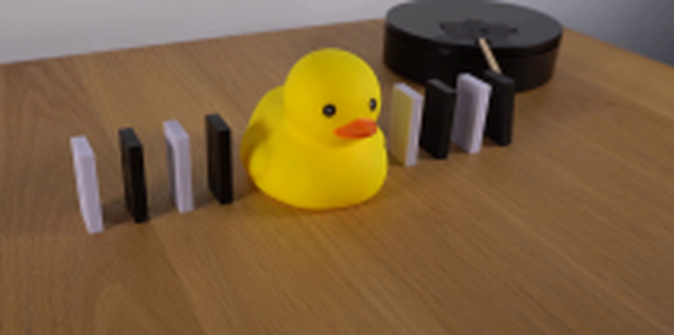
视觉工具实际返回图片 3
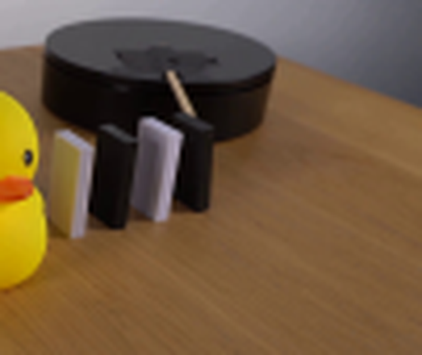
视觉工具实际返回图片 4
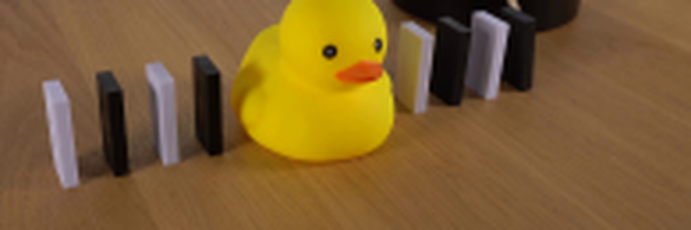
视觉工具实际返回图片 5
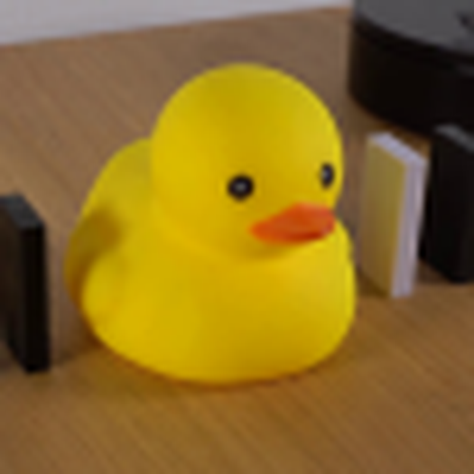
视觉工具实际返回图片 6
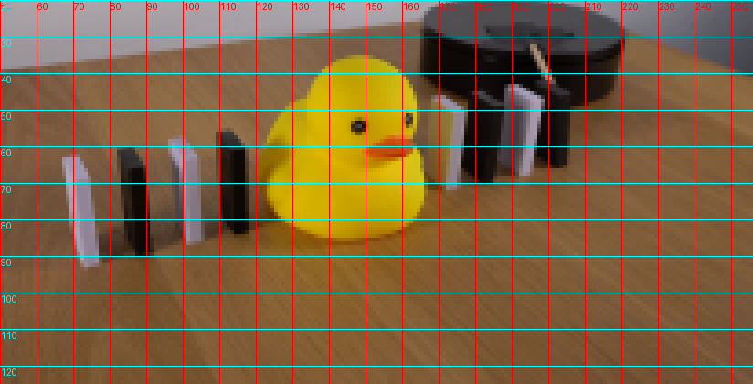
视觉工具实际返回图片 7
视觉工具实际返回图片 8
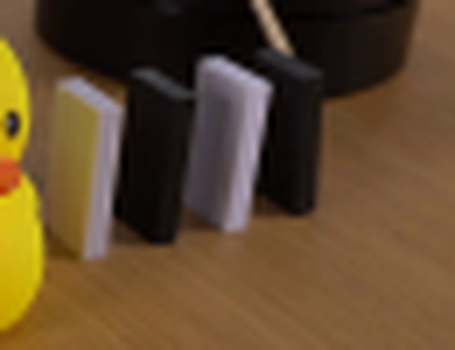
视觉工具实际返回图片 9
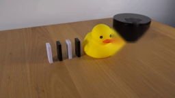
视觉工具实际返回图片 10
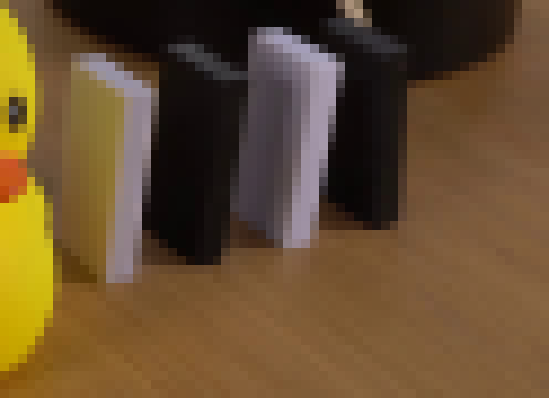
视觉工具实际返回图片 11
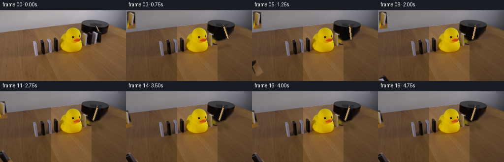
视觉工具实际返回图片 12
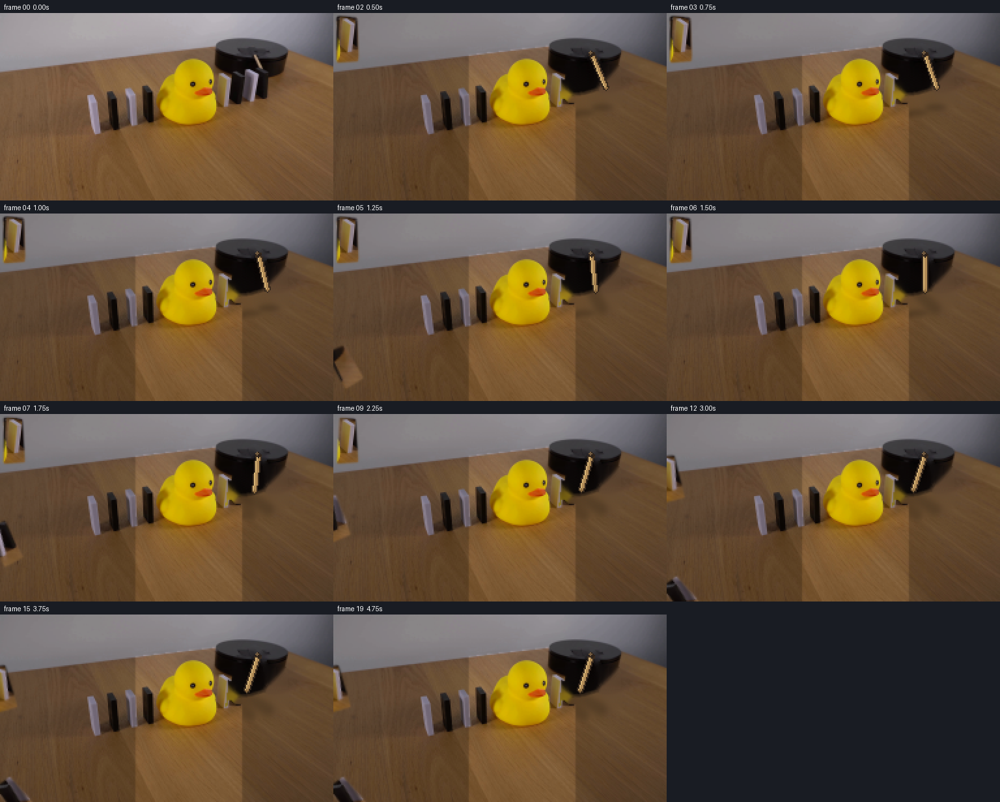
视觉工具实际返回图片 13
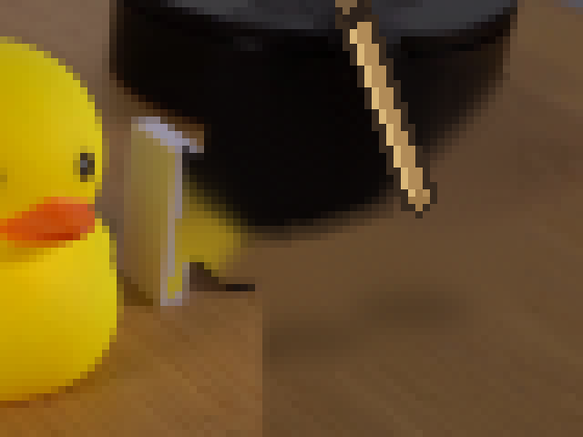
视觉工具实际返回图片 14
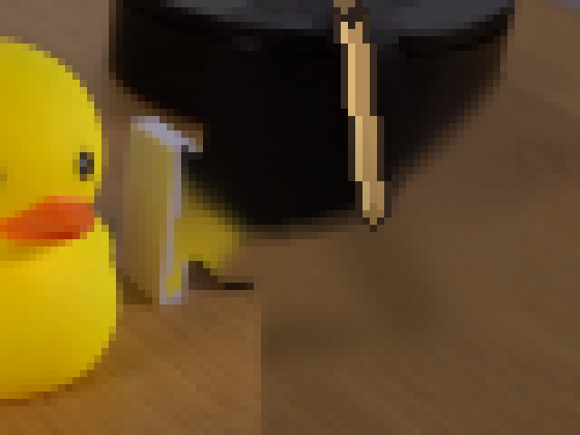
视觉工具实际返回图片 15
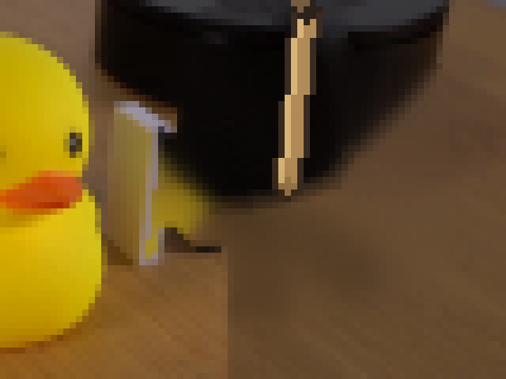
视觉工具实际返回图片 16
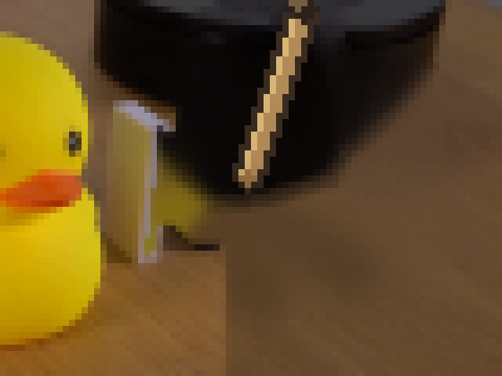
视觉工具实际返回图片 17
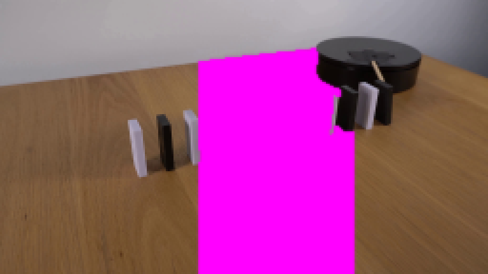
视觉工具实际返回图片 18
视觉工具实际返回图片 19
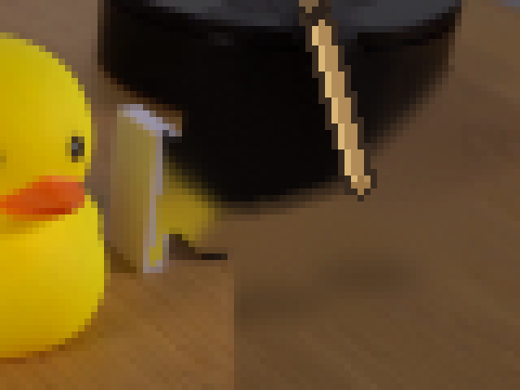
视觉工具实际返回图片 20
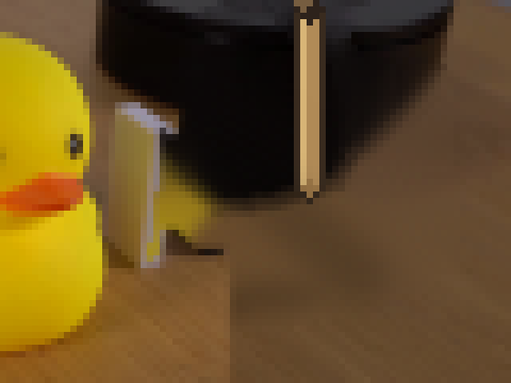
视觉工具实际返回图片 21
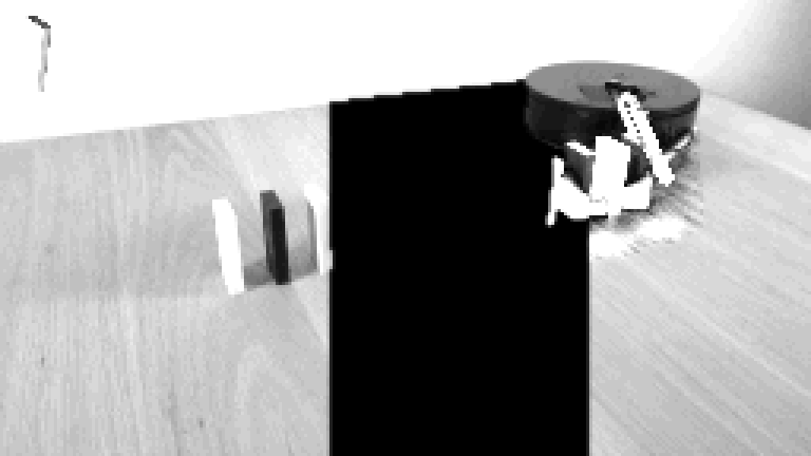
视觉工具实际返回图片 22
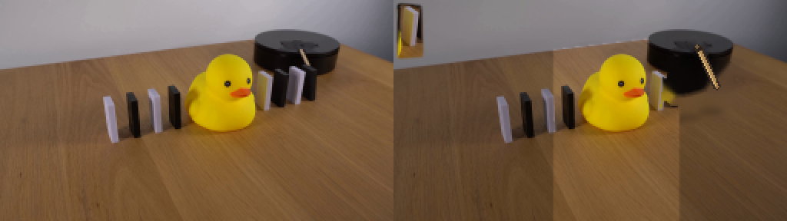
保存候选 1 份；完成命令 24 次；可验证图片返回 22 张。原始 API 响应与完整日志保留在本地。